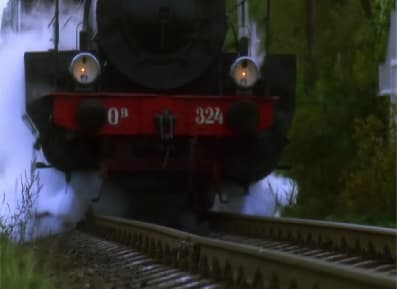
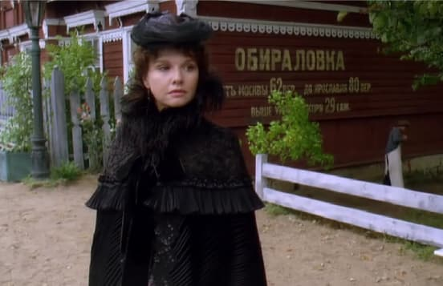
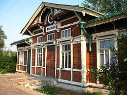
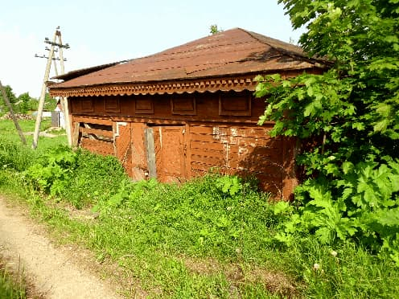

Эпизод гибели Анны Карениной. Станция Вруда.
Из фильма "Анна Каренина" (2009).
В последний раз станция Вруда сверкнула свежей краской в 2007 году, когда снималась в фильме "Анна Каренина" Сергея Соловьева, в роли станции Обираловки. Согласно роману, Анна села в поезд и доехала до ближайшей к поместью матери Вронского станции. Сегодня это станция Железнодорожная под Москвой, а до 1939 года - станция Обираловка.
В этом месте трагически закончилась жизнь Анны Аркадьевны Карениной.

